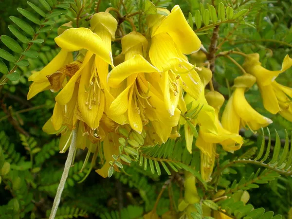

¿Que es la Vida Vegetal?
Conocido tambien como el reino vegetal es el tipo de vida con el que mas estamos rodeados y relacionados, ya que esta habita la tierra en diferentes formas y colores abundantemente. Este tipo de vida tambien tiene varias formas de clasificarse.
Vasculares y no vasculares
Vasculares son las que poseen hojas, tallos, flores y frutos y las no vasculares son las que NO poseen las anteriores caracteristicas Las plantas vasculares pueden reproducirse tanto por semillas como por esporas, sin embargo, en el caso de las plantas no vasculares estas solo pueden reproducirse por esporas en condiciones favorables.
Plantas con semillas y sin semillas
Las plantas con semillas son llamadas espermatofitas. La evolución de las semillas en las plantas vasculares fue muy importante. De hecho, podría decirse que fue tan importante como la evolución de los tejidos vasculares.
Las semillas resolvieron el problema de la liberación de brotes en un mundo seco. Una vez que las semillas evolucionaron, las plantas vasculares y sus descendientes se diversificaron para cubrir nichos terrestres por todas partes.
Actualmente, las plantas vasculares con semilla dominan la Tierra.
Las plantas vasculares sin semillas tienen tejido vascular, un tejido especializado que transporta agua y nutrientes por toda la planta.
Las plantas vasculares sin semilla incluyen a las licófitas, helechos, psilotum y colas de caballo.
¿Cómo se reproducen?
Las plantas sin semillas pueden reproducirse asexualmente o sexualmente. Algunas plantas sin semillas, como los antocerotes y las hepáticas, pueden reproducirse asexualmente a través de la fragmentación.
Cuando un pequeño fragmento de la planta se rompe, se puede formar una nueva planta.
La reproducción de las plantas con semillas es un proceso fascinante que comienza con la polinización, donde el polen que lleva las células masculinas se transfiere a los órganos femeninos de la flor. La fertilización resultante da origen a la formación de semillas, cada una conteniendo un embrión en desarrollo, tejidos nutritivos y una cubierta protectora.
Estas semillas maduran y se dispersan, a menudo con la ayuda del viento, agua o animales, asegurando su alejamiento de la planta madre. Cuando las semillas encuentran un entorno propicio, germinan y dan lugar al crecimiento de una nueva planta. Así, el ciclo de vida continúa, destacando la asombrosa estrategia de las plantas para garantizar su supervivencia y expansión.
Especies extintas
Lepidodendron:
Esta planta también es llamada árbol Escala o árbol de escamas. Podía llegar a superar los 30 metros de altura.Silphium:
La extinción de esta planta originaria de Libia data del siglo I a.C. Antiguas culturas como las de los egipcios, romanos y griegos utilizaban la planta Silphium como anticonceptivo, a modo de control de natalidad, y para tratar dolores, es decir, como analgésico.Sophora toromiro:
Era propia de la Isla de Pascua y se extinguió porque en el siglo XIX sufrió una deforestación grave a manos humanas. Des de hace tiempo hay proyectos que buscan recuperarla, aunque actualmente, por el momento, no hay resultados positivos. Especies en peligro de extinción
Venus atrapamoscas (Dionea atrapamoscas)
Orquídea subterránea del oeste (Rhizanthella gardneri)